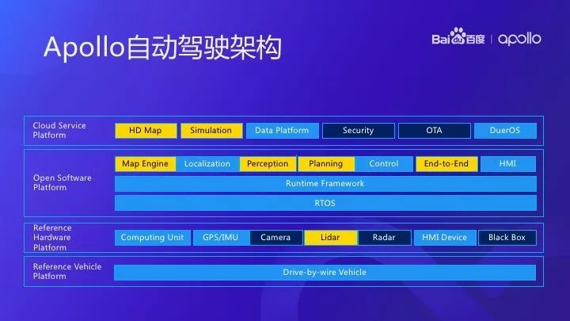
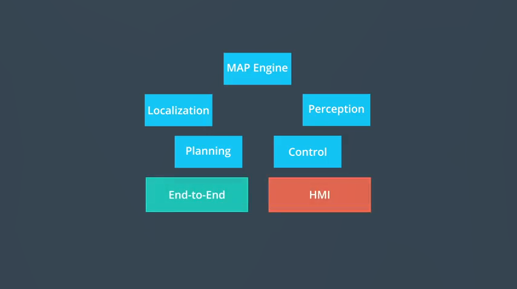
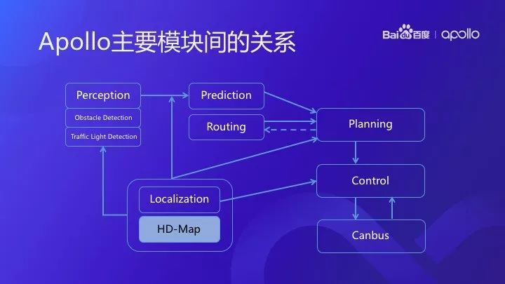

概览
本部分主要涉及自动驾驶及其技术框架的一些重要概念。其中开源软件平台和云服务平台部分会在后续展开。
快速回忆
- 自动驾驶的技术框架包含哪四个层面？每个部分包括哪些重要模块？各个模块的作用是什么？
- ROS和Apollo的关系是什么？Apollo为了适应自动驾驶的需要对ROS进行了哪些改进、作用是什么、如何深入理解？
自动驾驶的分级
自动驾驶的分级 (Levels of Driving Automation)包含L1-L5共计五个级别。
L0 - base level, 驾驶员是系统唯一决策者；
L1 - 定速巡航，车辆提供转向或加速支持，有自动控制功能，以防范车祸；
L2 - 固定车道线，车辆自动控制大于2项功能 ( e.g. 自动巡航控制和车道保持)；
L3 - 特定环境下无人驾驶 conditional automation, 车辆判断是否恢复驾驶员模式；
L4 - 完全无人驾驶 High automation, 车辆不存在方向盘等，但被限制在某些区域（“地理围栏”）中；
L5 - 完全无人驾驶 Full automation。
技术框架
技术框架包括四个层面：参考车辆平台 (Reference Vehicle Platform) 、参考硬件平台 (Reference Hardware Platform)、开源软件平台(Open Software Platform) 、云服务平台 (Cloud Service Platform)。

参考车辆平台
参考车辆平台指线控驾驶车辆，是受电子信号控制的基础车辆（区别于仅通过实体方向盘、油门踏板和刹车踏板控制的车辆）；
参考硬件平台
参考硬件平台，包含控制器区域网络 (CAN)、计算单元、GPS、惯性测量单元 (IMU)、Camera、激光雷达 (LIDAR)、毫米波雷达 (Radar)、人机交互设备、BlackBox等硬件：
控制器区域网络：连接计算机系统和汽车内部网络，传输加速、制动和转向信号；
GPS：当然是通过卫星定位；
惯性测量单元：通过跟踪方向、速度、加速度等因素，测量车辆运动和位置。该内容在定位 - 惯性导航部分会有涉及，本部分稍作展开：
简单来说，它能根据你的运动情况计算出你运动了多少距离，是朝哪个方向移动的。同样的，这东西其实普遍存在于你的手机里……因为这个IMU就是根据加速度来计算运动速度和方向的。它里面包含了3个加速度计和3个陀螺仪，专门用来测量平移量和旋转量。[4]
激光雷达：由脉冲激光器组成，通过360°扫描车周来计算物体距离，并生成一幅点云地图。
可分为机械式（常见于车顶）和固态（常位于车灯下方两侧）两种。
摄像头
毫米波雷达：用来接收和发射毫米波，计算出车辆速度、距离远近等数据。分辨率低，但不受天气和照明条件限制。
开源软件平台
开源软件平台包括：实时操作系统(RTOS)、运行时框架(Runtime Framework)和应用程序模块层(Application Modules Layer)。
实时操作系统
开放式软件平台以RTOS为基础，在其上搭建运行框架和应用程序模块。
Apollo RTOS = Ubuntu Linux系统（非实时操作系统）与Apollo内核（kernel）的结合。对于自动驾驶而言，“实时”性能确保了系统稳定性和驾驶的安全性。
运行时框架
运行时框架是Apollo的操作环境。详细解释见引用内容：
运行时框架为操作系统提供运行环境，简单点说就是底层操作系统发出的指令如何传达到应用层……百度……采用业界最常用的机器人操作系统（ROS）来承担这一传递信息的重任。视频中为此还特意解释道：“虽然ROS是一个操作系统，但在这里它被用作在Apollo RTOS 上运行的软件框架”……
ROS最大的特点便是按功能划分模块。每个模块都会有输入的数据流、如何处理数据以及输出的数据流，在编写代码时，便可按照功能划分模块，例如定位就会作为一个模块，其下还包含了定位的数据处理、数据融合、更新迭代等多个类，非常便于捋清整体逻辑，从而构建起庞大的代码架构。但是由于这些模块相互独立，因此只能通过RTE这个框架来进行通信。[4]
为了使ROS适应无人车，Apollo团队改进了共享内存的功能和性能、去中心化和数据兼容性。
共享内存……省去了多个模块在调用同一个数据时要重复开辟新内存空间的烦恼。共享内存所支持的“一次写入，多次读取”功能允许诸如物体识别、定位、GUI等多种不同任务之间并行运行而不打架。
去中心化……主要为解决单点故障问题……让一个区域内的节点具有所有该区域内节点的全部信息，这样，一个节点坏死也不会影响大局了。
数据兼容……确保节点和节点之间传送的ROS message是同一种格式。采用通用格式的消息数据，便能使节点之间互相理解对方想要传达的意图。这种接口语言叫做Protobuf，它是一种结构化数据序列化方法。即使在原传输序列后增添新的数据信息，也不会破坏原本的数据格式。[4]
应用程序模块层（⭐）

应用程序模块是Apollo的核心内容。Apollo软件平台具有各种模块，这些模块包括 MAP引擎、定位、感知、规划、控制、端到端驾驶以及人机接口（HMI）。

各模块间的关系较为复杂，后续的课程将对此部分进行展开。
云服务平台
包括高精地图（HD MAP）、模拟驾驶的仿真服务（Simulation）、数据平台（Data Platform）、安全（Security）和OTA服务等。
- 仿真环境平台：可设置不同驾驶场景（障碍物、路线、交通灯状态等），并对实时路况进行三维可视化描述。评价系统包括：碰撞检测、交通灯识别、速度限制、障碍物检测和路线逻辑等。
- 数据平台：包括交通信号灯数据、带边界框的障碍物数据、语义分割数据等。